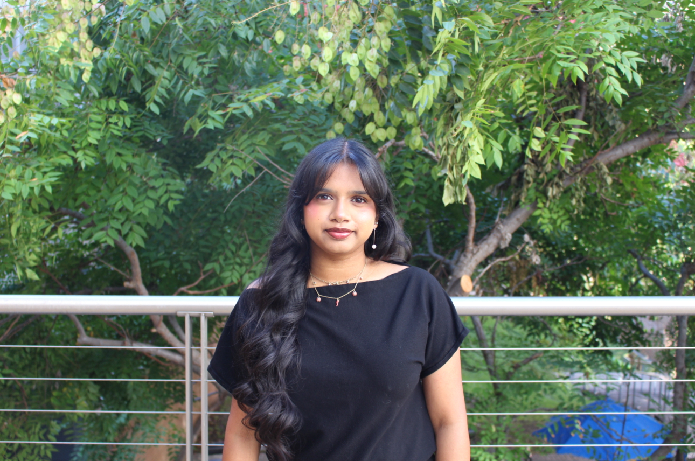

I’m a sophomore building intelligent systems that blend mechanical intuition, creative problem-solving, and a deep commitment to community. GPA 3.60 · Graduation June 2028 · Multilingual: English, Hindi, Telugu (native), Spanish (working).
Designing intelligent systems that feel calm and deliberate—where circuits, code, and people move together with purpose.

I’m Selina Syed, a Robotics Engineering major with a Data Science minor at UC Riverside. Four years of FIRST Robotics taught me to weld mechanical design, code, and human-centered thinking into one practice. Those early mornings in the shop made me curious about how machines can learn from data while still feeling intuitive and safe for the people who interact with them.
My interests now span biomedical sensing, controls, and the “machine intuition” that emerges when good models meet thoughtful hardware. I sketch, prototype, and iterate quickly in SolidWorks and C++, then slow down to test, listen, and refine. RoseHack keeps me grounded in community; I’m driven to make STEM spaces more inclusive and reflective of the voices we serve.
Multilingual in English, Hindi, Telugu, and Spanish, I lean on communication and empathy as engineering tools. Collaboration, mentorship, and exploration are my anchors—whether I’m building a new mechanism, tuning a loop, or guiding a teammate through a tricky debug session.
C++, Python, MATLAB, embedded C for hardware-driven logic and data-driven intuition.
ROS basics, kinematics intuition, and thoughtful sensor/actuator integration.
Arduino, microcontrollers, circuits, IMU/IR/flex sensors, and careful lab practice.
SolidWorks, Git/GitHub, oscilloscopes, multimeters, 3D printers, COMSOL basics.
PID-tuned mobile robot using IR sensing for smooth cornering and stability.
Mobile bot with basic obstacle detection and course correction.
Assembly routines to compute parity and reusable sub-calls.
Probability experiments on card draws with configurable trials.
Universal Design merry-go-round modeled in SolidWorks with ADA clearances and detailed assemblies.
C++ BST builder with Graphviz rendering, height/depth calculations, and recursive architecture.
Team-built text RPG with classes, inventory, combat logic, and rigorous testing.
Documented mechanical systems, CAD sketches, and coordinated multi-team robot builds.
Optical heart rate sensing with Arduino, averaging, and Serial Plotter visualization.
COMSOL model of glomerular filtration with laminar flow assumptions and boundary controls.
Four seasons of design, build, and pit troubleshooting under competition constraints.
Grounded in dynamics, control, circuits, programming, and data structures—connecting models to microcontroller tests that behaved in the real world.
Documented chassis and intake designs, gear ratios, and rule-driven constraints while coordinating mechanical and programming teams to finish two competitive robots.
Built sponsor relationships and communication workflows to fund inclusive programming, swag, and workshops for underrepresented groups in STEM.
Supported documentation and data management for product launches, learning traceability, calm execution, and precision in professional workflows.
Built sponsor relationships to empower underrepresented groups in STEM, crafted communication workflows, and secured support from partners like HP, Twilio, and CodeRabbit.
Oversaw 500+ K–8 tutoring sessions, mentored new tutors, and worked closely with families—growing empathy, clarity, and leadership through education.
Supported documentation and data management for product launches, learning precision and traceability in engineering workflows.
Assisted campaigns with Excel and Outlook, shadowed mentors, and practiced concise corporate communication transferable to engineering proposals.
I am pursuing a B.S. in Robotics Engineering with a minor in Data Science at UC Riverside, maintaining a 3.60 GPA and graduating in 2028. Coursework in CS010C, CS100, BIEN010, and design-focused studios has grounded me in data structures, software design, biomedical instrumentation, and systems thinking—foundations I bring into every lab, club build, and research collaboration.
Looking for Summer opportunities in robotics, embedded systems, or mechatronics. Open to research, lab roles, and internships.